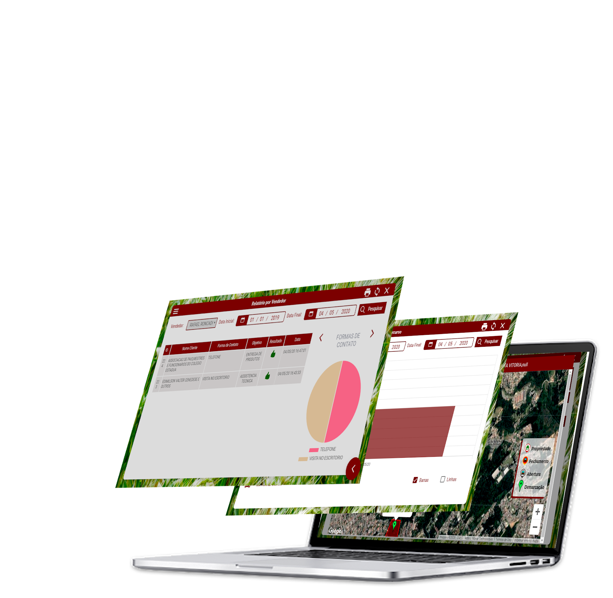
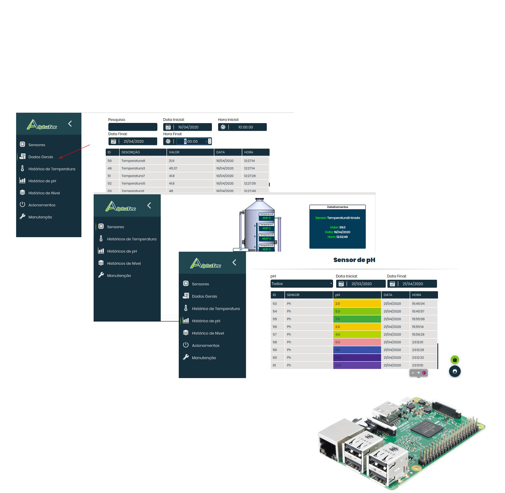

<div class="container">
    <div class="back">
        <div id="top">
            <div class="logo">
                
                
            </div>
            <div id="menu">
                <div class="item" [ngClass]="{'select':select === 'defines'}" (click)="go('defines')">
                    Home
                </div>
                <div class="item" (click)="go('about')" [ngClass]="{'select':select === 'about'}">
                    Sobre
                </div>
                <div class="item" (click)="go('service')" [ngClass]="{'select':select === 'service'}">
                    Serviços
                </div>
                <div class="item" (click)="go('portfolio')" [ngClass]="{'select':select === 'portfolio'}">
                    Portfólio
                </div>
                <div class="item" [ngClass]="{'select':select === 'contact'}">
                    Contato
                </div>
                <div class="item icon">
                    
                </div>
                <div class="item icon">
                    
                </div>
                <div class="item icon">
                    
                </div>
            </div>
        </div>
        <div id="defines" (mouseenter)="select='defines'">
            <div class="muta">Desenvolvimento</div>
            <div class="muta">de</div>
            <div class="muta">{{item}}<strong>_</strong></div>
        </div>
        <div id="about" (mouseenter)="select='about'">
            <div class="descricao">
                <p>Somos uma empresa de desenvolvimento de Softwares voltada à automação de processos,
                    agilidade e construção de soluções.
                </p>
                <p>
                    Desenvolvemos softwares para diversos ramos da tecnologia,
                    desde sistemas Mobile, até gerenciadores de IoT.
                </p>
                <p>Nossa equipe é formada por três membros, um programador, um contador e uma gata muito esperta. </p>
            </div>
            <div class="animation">
                <object id="mysvg" type="image/svg+xml" width="500" height="500"></object>
            </div>
        </div>
        <div id="service">
            <div class="item">
                <div class="icon">
                    <object id="svgmobile" type="image/svg+xml" width="200"
                        data="../../../assets/animations/tec5.svg"></object>
                </div>
                <div class="text">
                    <p><strong>Soluções para Desktop e Web</strong></p>
                    <p>Utilizando técnicas de BI, Big Data e análise de dados, fornecemos softwares que otimizam os
                        processos administrativos, financeiros e organizacionais da sua empresa.</p>
                </div>
            </div>
            <div class="item">
                <div class="icon">
                    <object id="svgmobile" type="image/svg+xml" width="150"
                        data="../../../assets/animations/tec2.svg"></object>
                </div>
                <div class="text">
                    <p><strong>Soluções para Mobile</strong></p>
                    <p>Desenvolvemos aplicativos para Android e iOS, com ampla usabilidade e
                        fornecendo agilidade à sua empresa. Integramos seu modelo de negócio com a facilidade do mundo
                        mobile,
                        permitindo maior enganjamento com seus clientes.</p>
                </div>
            </div>
            <div class="item">
                <div class="icon">
                    <object id="svgmobile" type="image/svg+xml" width="200"
                        data="../../../assets/animations/tec4.svg"></object>
                </div>
                <div class="text">
                    <p><strong>Soluções para IoT</strong></p>
                    <p>Desenvolvemos back-end e Front-end para seu sistema de IoT, fornecendo uma interface
                        agradável ao usuário, além de um servidor para comunicação com a sua plataforma.
                    </p>
                </div>
            </div>
        </div>
        <div id="portfolio">
            <div class="portfolio">
                <div class="icon" (click)="return()">
                    
                </div>
                <div class="contain" id='t1'>
                    <section class="descricao">
                        <h1 class="title">FácilApp</h1>
                        <p>App de genrenciamento do Sistema Fácil ERP, da empresa <strong class="link"
                                (click)="goLink('http://www.agrodados.com.br')">
                                Agrodados</strong>.</p>
                        <p>O fácilApp é um app de gerenciamento de pedidos, registro de visitas agronômicas,
                            compêndio agrícola e gerenciamento de expedição, que se integra ao ERP Fácil, permitindo
                            a gestão de dados da empresa no mobile, com maior praticidade e independente da localização
                            do
                            usuário.
                        </p>

                    </section>
                    <div class="image">
                        
                    </div>
                </div>
                <div class="contain" id='t2'>
                    <section class="descricao">
                        <h1 class="title">Registro de Visitas Fácil</h1>
                        <p>Web App de Gerenciamento do registro de visitas do FácilApp da empresa <strong class="link"
                                (click)="goLink('http://www.agrodados.com.br')">
                                Agrodados</strong>.</p>
                        <p>Com o Registro de Visitas Fácil é possível gerenciar demarcações, visitas agronômicas,
                            percursos, problemas e soluções encontradas na visita, diretamente pela internet.
                        </p>
                        <p>De fácil usabilidade e interface amigável, é possível gerar relatórios e consultas,
                            fornecendo informações gerenciais importantes ao gestor.
                        </p>

                    </section>
                    <div class="image">
                        
                    </div>
                </div>
                <div class="contain" id='t3'>
                    <section class="descricao">
                        <h1 class="title">Centro de Controle Biodigestor (IoT)</h1>
                        <p>Servidor de controle de IoT em parceria com a empresa <strong class="link"
                                (click)="goLink('https://mgkindustria.web.app')">
                                AlphaTech</strong>.</p>
                        <p>Utilizando uma RaspBerry como servidor, os sensores do Biodigestor
                            se comunicam através de protocolo MQTT com um banco de dados.
                        </p>
                        <p>O usuário pode monitorar os sensores, emitir relatórios e realizar acionamentos
                            diretamente da interface fornecida pela RaspBerry, que também age como ponto
                            de acesso local, dispensando a necessidade de redes privadas.
                        </p>

                    </section>
                    <div class="image">
                        
                    </div>
                </div>
                <div class="icon" (click)="next()">
                    
                </div>
            </div>
        </div>
        <div id="contact">

        </div>
    </div>
</div>